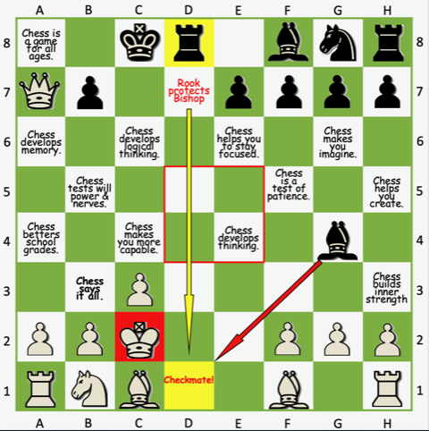

Learning Chess the Fun and Rewarding Way!
At our Primary Schools Chess Clubs, we're not just teaching a game — we're shaping confident, strategic thinkers one move at a time.
Chess is more than just a board game; it's a brilliant way for children to learn focus, patience, resilience, and critical thinking. That’s why we’re proud to offer a unique chess coaching program that makes learning fun, competitive, and deeply rewarding.
Why Chess?
When children play chess, they’re developing valuable life skills without even realising it. Our sessions are designed to create a vibrant, encouraging environment where every child — regardless of their starting point — can grow, learn, and shine!
What Makes United Knights Chess Clubs Special?
We’ve designed our coaching to be as engaging as it is educational:
🧠 Tactics and Strategy First – Every session begins with a new chess concept, tactic, or strategy. Children are encouraged (and rewarded!) for applying what they've learned in their games.
🏅 Positive Points System – Win or not, every child earns points in each game. This ensures that effort, learning, and participation are always recognised.
🏆 Termly Tournaments – At the end of each term, we host a variety of exciting tournaments. Prizes include engraved Trophies for Champions, shiny Silver and Bronze Medals handed out during school assemblies and Certificates handed out in the Chess Club sessions.
🌟 Player of the Week – Each week, we spotlight one child for their effort, improvement, or sportsmanship — because we believe every child deserves their moment.
🤝 Inclusive Play – Children are paired by ability, not age or grade, so everyone competes on equal footing and develops at their own pace, pressure-free.
♟ The Levels System – Our fun progress tracker lets children work their way up from Pawn to King, earning certificates and collectible chess piece keyrings along the way!
🏫 Beyond the Club – We support children in taking part in school and inter-school competitions, helping them grow in confidence and represent their school with pride.
Learning Through Play
More than anything, we believe learning happens best when it’s fun. Our club is a place where friendships are formed over the chessboard, laughter is heard between rounds, and every child feels valued — whether they’re learning their first moves or refining their opening gambits.
Ready to Join the Chess Fun?
If you’d like your child to be part of something both fun and enriching, our chess club is the perfect place to start. Let’s give them the chance to play, learn, and grow — all through the beautiful game of chess!
